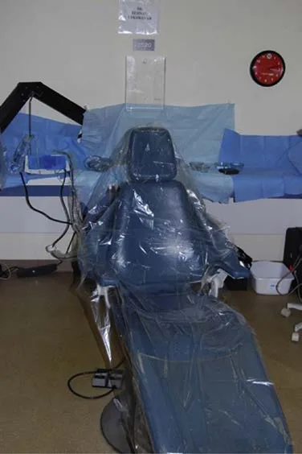
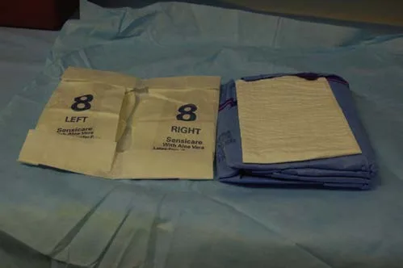

نسخه استخراجشده؛ ترجمه یا تأیید علمی انجام نشده است. وضعیت: captured
آسپسیس جراحی یک مجموعهی مرحلهای است، نه یک تصمیم لحظهای. ترتیبش هم اهمیت دارد:
کلاه جراحی، عینک محافظ، هدلایت و ماسک باید پیش از اسکراب دستها پوشیده شوند — چون پس از اسکراب دیگر نمیتوانی به سر و صورتت دست بزنی. تمام انگشتر، ساعت، دستبند و جواهرات پیش از شروع اسکراب برداشته میشوند.
و مدت: کل فرایند اسکراب حدود سه دقیقه طول میکشد. اتاق باید محل سینک برای اسکراب و پوشیدن گان داشته باشد.
قواعد میدان استریل — چند قاعده که در عمل زیاد نقض میشوند:
فقط مواد و ابزار استریل درون میدان استریل قرار میگیرند. بالای میز و زیر میز میدان استریل، غیراستریل محسوب میشود. موادی که تاریخ انقضای سازنده دارند، پس از آن تاریخ ناایمن تلقی میشوند. و هنگام قرار دادن اقلام استریل در میدان، میتوان آنها را از ارتفاع حدود ۱۵ سانتیمتر بالای میدان رها کرد.

هندپیس. دو خانواده با دو کاربرد کاملاً متفاوت:
۱:۱ — هندپیسهای مستقیم با دور بالا (حدود ۴۰ تا ۵۰ هزار دور در دقیقه)، برای پیوند استخوان.
۱۶:۱ یا ۲۰:۱ — هندپیسهای کنتراانگل کاهنده، برای آمادهسازی استئوتومی و کاشت ایمپلنت. نکته این است که آمادهسازی استئوتومی به دور پایین و کنترلشده نیاز دارد، نه سرعت بالا.
تیغها. هرکدام جای خودش را دارد: #۱۱ برای برش آبسه و عفونت، #۱۲ و #۱۲b برای اطراف دندانها و اتصال برشها در نواحی کمدسترس، #۱۵ رایجترین تیغ در ایمپلنتولوژی، #۱۵c با گردن باریکتر، برای دسترسی راحتتر اطراف دندانها.
محلول شستوشو. باید کلرید سدیم ۰٫۹ درصد یا سالین استریل باشد. و کاربرد دومی هم دارد: اگر حاشیههای بافت در طول جراحی خشک شوند، شستوشوی دورهای با سالین استریل یا گاز مرطوب لازم است.
و هشداری دربارهی جراحی فلپلس: نشان داده شده که این روش میتواند به گرم شدن بیشازحد استخوان بینجامد، چون بدون بلند کردن فلپ، شستوشوی کافی استئوتومی اغلب دشوار است.
